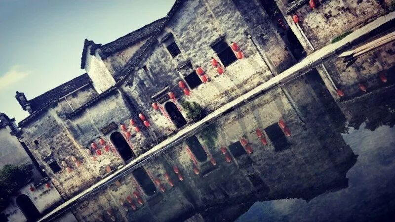
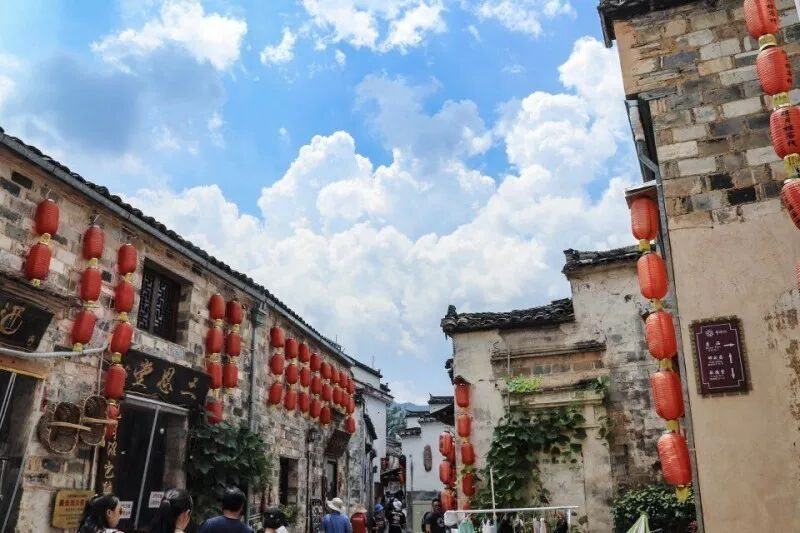
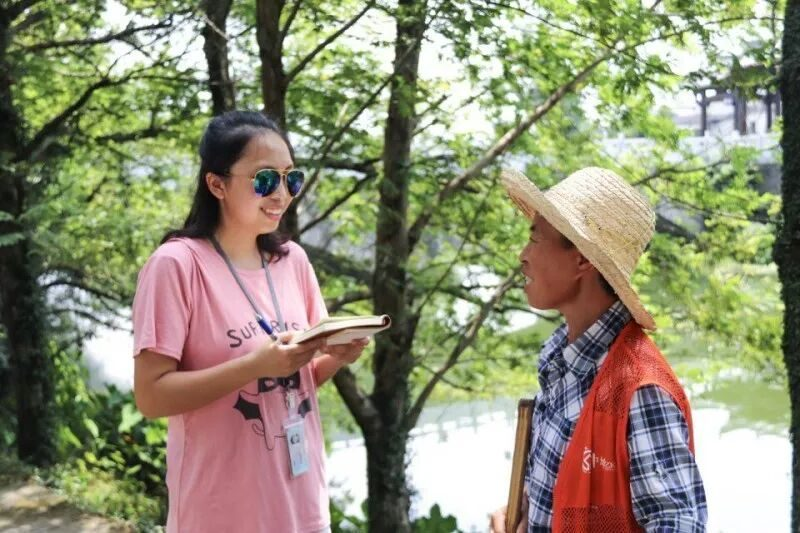

【行者无疆·拾遗皖徽】 “画里乡村”——宏村之旅

行者无疆第四日


初近村口，便有一块刻有宏村二字的雄伟磐石屹立。好似在保卫这美丽的村落，又像在迎接着远道而来的客人们。下一段台阶，眼前的一汪碧水便是南湖了。湖面映着垂柳与行人的倒影，再加之蜻蜓在上方飞舞，波光粼粼之中十分好看。南湖沿岸的小路游人如织络绎不绝。

正是骄阳似火的正午时分，但道路两旁成荫的绿树为旅人们挡住了毒辣的日光，树下坐着许多写生的学生，他们用纷纭的色彩记录下眼前这美景。南湖正中有一座窄窄的小桥，精巧秀气的设计与温柔秀美的南湖相映成趣，通过小桥便来到南湖书院门口。古朴的书院充盈着书卷气息，高堂上整齐摆放的桌椅让人联想到古时坐在这里上课的书生，这里的一砖一瓦都弥漫着文化的气息，令人沉浸其中。
皖南的徽派建筑，自上世纪九十年代后，于文化复兴的大潮中渐渐显露峥嵘。而随着时代变幻，一百多座历尽时间洗礼的古村落最终选择出了自己的两名代言人——西递和宏村。
宏村乃古代徽商赴京经商的必经之路，这也成为了它后来被称为“画里乡村”的基础，走过曲曲折折的小巷，身边掠过无数游人的侧影，耳畔的蝉声里掺杂着人们的喧哗。尘世的喧嚣里无法体味古村落的美，也许只有走去无人光顾的小路才有一丝久违的宁静。围墙旁的丝瓜藤蜷曲着，在这白墙黛瓦的凝重中点缀出些许活泼。顺着道旁的水渠行至月沼，你无法想象出比沼更贴切的词来形容这一顷方塘了，月沼四周的门楼在水面上撒下一片青绿的倒影，静谧中透露出饱经风霜的沧桑。也许总觉得有些遗憾吧，几年前清澈无匹的月沼已然透露出些许苍老，但淡淡的浑浊仍挡不住数百年积淀的灿烂光华。马头墙在沼边静静凝视着宏村的变化，熙熙攘攘间少了群抬头透过巷口仰望夕阳的人，但光影流离中那片盛景依旧毓秀钟灵。
宏村现状概述：流连于宏村秀美的风景，神往于宏村古朴的风情，但却止步于宏村有些商业化的内里。作为一个五Ａ级的国家旅游风景区，宏村自然是极大程度上吸引着游客与商人，有景区必有商业化，这似乎是中国旅游的现状。宏村很美，这无可否认，但如今的宏村却因这商业化的气息有所褪去了原有的美丽。倒映于碧水湖面上的该是远处的山，天上的云，粉墙黛瓦，而不该是愈加熙熙攘攘的人群。
人满为患，小吃满街，一个古村该怎样留住她原有的美丽？

采访原住居民所得：宏村在十年前商业化程度并不严重，随着热度增加，客流量增多，宏村的原住居民的生活受到影响。一些会经商的居民留下开店，其他居民则把民居租给外地商人，自己另找居所，这也是我们行者团在村中难以找到当地人的原因。
宏村旅游业的发展对原住居民来说是利弊共存的：政府补贴获得经济利益，生活水平提高，此为利处；居民生活环境被打扰，且秀美的山水，古朴的徽派建筑每天都吸引着众多学生及画家前来写生，这是宏村湖边一道亮丽的风景。只可惜湖水被清洗画笔的颜料所污染，已经没有办法作为生活用水。 当被问及是否希望宏村发展旅游业时，我们得到的回答是“也希望，也不希望”，而这的确是一个矛盾。

总结：在采访过程中，商业化几乎是每位游客提到的问题, 游客想要看到的是最原生态的美丽，而非商业化的堆砌。我们不能阻止商业化的发生，我们能做的只尽量保持宏村原有的自然面貌，在发展中保护，在保护中发展，做到和谐可持续。谁都不希望看到，一个古村落逐渐湮没于商业化的洪流之中，而逐渐丧失原有的灵气。
图片丨行者无疆实践团
文字丨李心悦 徐信步 杨宇晴
责编丨邓子孚 应雨珊
审核丨潘雯雯
行者无疆实践团
QQ：2758025831

随行者一起认识世界
长按二维码关注